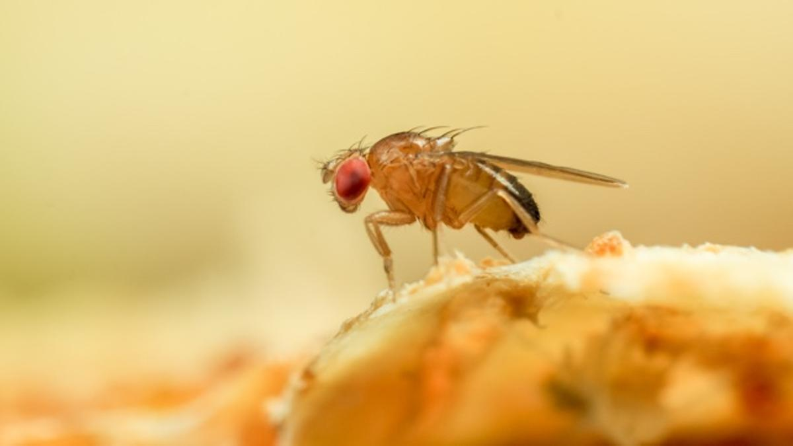

PLAGAS:
las plagas más nocivas para los agricultores, se destacan:
el pulgón amarillo, la mosquita blanca, el picudo rojo, la
araña roja, el escarabajo gallina ciega, la mosca de la
fruta, y la larva minadora de hojas.
Como afectan las diferentes plagas a los cultivos
Las diferentes variedades de pulgones afectan cultivos que
van desde la papa, el tomate o el chile, hasta el algodón.
Esta plaga detiene el proceso de maduración de los cultivos,
además de que puede transmitirle una gran cantidad de virus.
Los escarabajos conocidos como gallinas ciegas pueden
afectar el crecimiento y ocasionar la muerte de diferentes
tipos de cultivos como el maíz o el sorgo, ya que se
alimentan directamente de las raíces de estas las plantas.